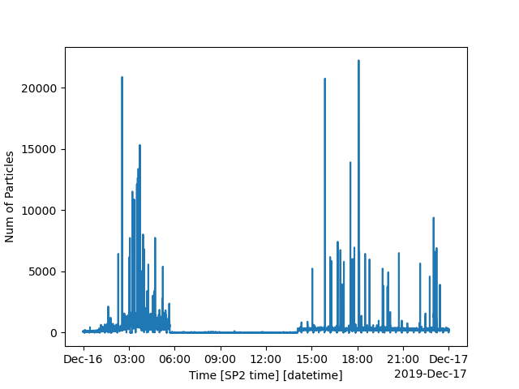

Note
Go to the end to download the full example code
Example for plotting number of particles in housekeeping data#
<xarray.Dataset>
Dimensions: (time: 86400)
Coordinates:
* time (time) datetime64[ns] 2019-12-16T00:00:00.6000...
Data variables: (12/46)
Time (time) float64 0.609 1.622 ... 8.64e+04 8.64e+04
Sample Flow LFE (time) float64 119.7 120.3 118.7 ... 119.2 121.0
YAG Power (time) float64 5.15 5.279 5.299 ... 5.166 5.214
Incand. Conc. (time) float64 6.449 4.512 3.99 ... 7.94 10.06
Sheath Flow Read (time) float64 1.006e+03 1.006e+03 ... 1e+03
YAG Crystal Temp (time) float64 28.59 28.66 28.68 ... 28.69 28.52
... ...
Num of Particles (time) int64 73 56 53 56 86 ... 223 203 241 214
Num Written to File (time) int64 73 56 53 56 86 ... 223 203 241 214
Num in File (time) int64 40 96 149 205 ... 23167 23408 23622
Laser Power Switch (time) int64 1 1 1 1 1 1 1 1 ... 1 1 1 1 1 1 1 1
Sample Pump Power Switch (time) int64 1 1 1 1 1 1 1 1 ... 1 1 1 1 1 1 1 1
Laser Temp (time) float64 0.9572 0.9572 ... 0.9572 0.9572
Attributes:
_datastream: mosaossp2auxM1.00
_site: mos
_arm_standards_flag: 0
import pysp2
import matplotlib.pyplot as plt
my_hk = pysp2.io.read_hk_file(pysp2.testing.EXAMPLE_HK)
print(my_hk)
# my_hk is a standard xarray dataset, so one can use xarray's plotting
# capabilities in order to make the plot
my_hk['Num of Particles'].plot()
plt.show()
Total running time of the script: (0 minutes 4.016 seconds)